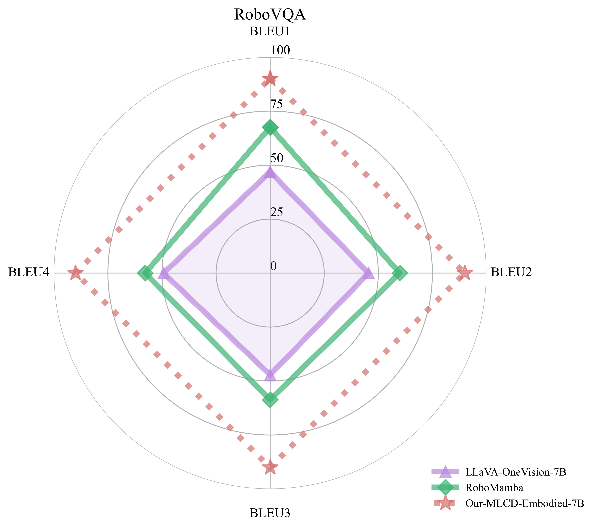
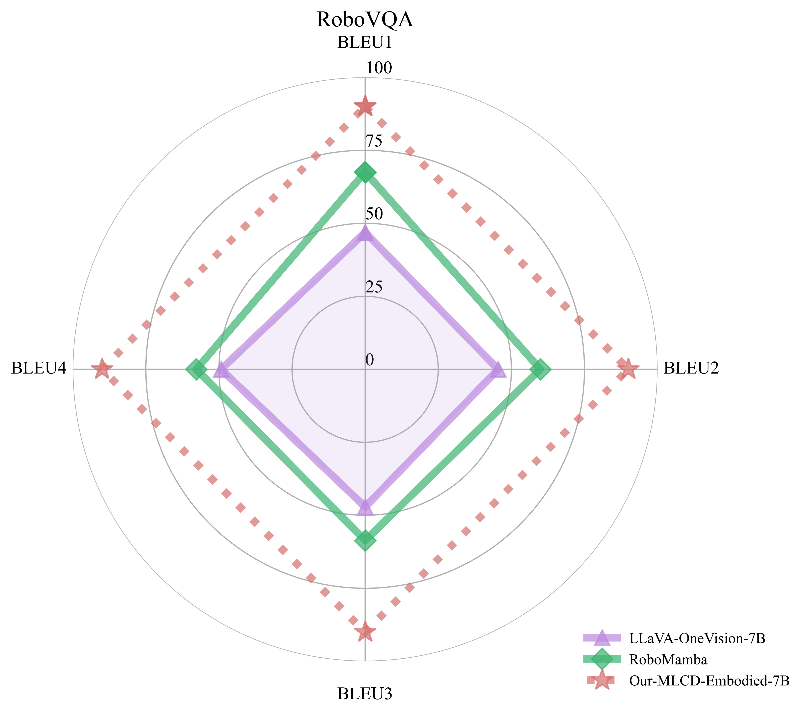

UNICOM & MLCD
This repository focuses on building foundational visual models for large multimodal language models using large-scale datasets such as LAION400M and COYO700M. We employ sample-to-cluster contrastive learning to optimize performance. Our models are primarily used for multimodal visual large language models, such as LLaVA.
We adopted the official LLaVA-NeXT and the official training dataset LLaVA-NeXT-Data for evaluating the foundational visual models.
Vision Tower |
RoPE2D |
ChartQA |
DocVQA |
InfoVQA |
OCRBench |
MMMU |
|---|---|---|---|---|---|---|
CLIP (ViT-L-14-336px) |
× |
66.52 |
75.21 |
38.88 |
525.00 |
44.20 |
SigLIP (ViT-SO400M-384px) |
× |
69.28 |
76.71 |
41.38 |
554.00 |
46.78 |
DFN5B (ViT-H-14-378px) |
× |
64.36 |
70.87 |
38.59 |
473.00 |
48.00 |
× |
67.84 |
76.46 |
43.48 |
531.00 |
44.30 |
|
√ |
71.07 |
79.63 |
44.38 |
572.00 |
46.78 |
The results of the ImageNet linear probe are as follows:
Model Name |
ImageNet Linear Probe |
Hugging Face |
|---|---|---|
MLCD-ViT-B-32-224px |
79.1 |
|
MLCD-ViT-L-14-336px |
86.3 |
|
MLCD-ViT-bigG-14-224px |
87.1 |
Latest News
🎅 [2024/12] We have launched the MLCD-Seg-7B, achieving scores of 85.3/81.5 on RefCOCO[testA/B], 82.9/75.6 on RefCOCO+[testA/B], and 80.5 on RefCOCOg[test].
🤖 [2024/11] We have launched the MLCD-Embodied-7B, which can reach the level of GPT-4V in embodied capabilities and possesses excellent general understanding abilities. For more details, please click → MLCD-Embodied.md.
🤗 [2024/10] We release MLCD-NeXT-7B to Hugging Face.
🏰 [2024/07] MLCD was accepted to ECCV2024.
🌍 [2023/03] UNICOM was accepted to ICLR2023.
MLCD-Embodied
More details about MLCD-Embodied can be found in the MLCD-Embodied.md file.
Some test results are as follows:
 

General Ability Evaluation: Comparison with LLaVA OneVision-7B and GPT-4
Dataset |
Split |
MLCD-Embodied-7B |
LLaVA OneVision-7B |
GPT-4v |
GPT-4o |
|---|---|---|---|---|---|
Vision Encoder |
- |
MLCD-ViT-L-14-336px |
SigLIP |
- |
- |
ChartQA |
test |
83.0 |
80.0 |
78.5 |
85.7 |
DocVQA |
test |
91.6 |
87.5 |
88.4 |
92.8 |
InfoVQA |
val |
73.9 |
70.7 |
- |
- |
InfoVQA |
test |
70.0 |
68.8 |
- |
- |
MMMU |
val |
47.3 |
48.8 |
56.8 |
69.1 |
MMStar |
test |
58.5 |
61.7 |
57.1 |
63.9 |
OCRBench |
- |
749.0 |
697.0 |
656.0 |
805.0 |
RealWorldQA |
test |
68.9 |
66.3 |
61.4 |
58.6 |
SeedBench |
image |
74.9 |
75.4 |
49.9 |
76.2 |
MME |
test |
578/1603 |
418/1580 |
517/1409 |
- |
Usage
git clone https://github.com/deepglint/unicom
cd unicom
pip install --upgrade pip
pip install -e ".[train]"
pip install flash-attn --no-build-isolation
CUDA_VISIBLE_DEVICES=0 python infer.py --model_dir DeepGlint-AI/MLCD-Embodied-7B
# example:
# >> Enter 'exit' to end the conversation, 'reset' to clear the chat history.
# >> Enter image file paths (comma-separated): ./asserts/logo.png
# >> User: <image>What kind of animal is it in this picture?
# >> Assistant: The image features a stylized representation of a cat, characterized by its vibrant and abstract depiction.
# >> User: What color is this cat?
# >> Assistant: The cat in the image is primarily white with blue, orange and pink accents, creating a visually appealing and unique appearance.
# >> User: <image>请你介绍一下这个图片
# >> Assistant: 这是一幅充满创意的猫头艺术作品。它采用了多色渐变和抽象风格，将猫的头部描绘成一个充满活力和色彩的视觉冲击。猫的眼睛用金色渲染，显得非常有神采，
# 而粉色的鼻子则增添了一丝可爱感。整体设计融合了现代艺术与传统猫头图案，创造出一种既独特又引人入胜的视觉效果。。
Eval
pip install lmms-eval==0.2.0
PYTHONPATH=./ CUDA_VISIBLE_DEVICES=0,1,2,3,4,5,6,7 python -m accelerate.commands.launch \
--main_process_port=12444 \
--num_processes=8 \
-m lmms_eval \
--model llava \
--model_args pretrained=DeepGlint-AI/MLCD-Embodied-7B,conv_template=qwen_1_5 \
--tasks mme \
--batch_size 1 \
--log_samples \
--log_samples_suffix mlcd \
--output_path ./eval_log/
Multi-Label Cluster Discrimination (MLCD)
More details about MLCD can be found in the MLCD.md file.
While CLIP models have shown excellence in many tasks via image-text contrastive learning, they often struggle with encoding complex semantic structures within images. To address this limitation, we introduce Multi-Label Cluster Discrimination (MLCD).
MLCD improves upon traditional approaches by clustering the the LAION dataset, which contains billions of images, into one million centers and assigning multiple closest clusters as labels to each image. This technique accounts for the presence of multiple objects within a single image. We also introduce a novel multi-label classification loss, which separately handles positive and negative class losses, minimizing label ambiguity. Our experiments demonstrate that MLCD achieves state-of-the-art performance in linear probe. Moreover, MLCD shows significant potential when integrated with multimodal large language models. The following two figures compare the evaluation performance of our model on MLLM and Linear Probe. The model we used is ViT-L-14@336px.
MLLMs Evaluation Results
To evaluate MLCD’s performance within multimodal large language models (MLLMs), we replaced the CLIP model in LLaVA-NeXT with the MLCD model. We paired this with the Qwen2.5-7B language model. For reproducibility, we utilized the LLaVA-Pretrain dataset for pre-training and the LLaVA-NeXT-Data for structured fine-tuning. The evaluation results confirm that the MLCD model performs exceptionally well across multiple benchmarks, underscoring its effectiveness in MLLMs.
Vision Tower |
MLCD (ViT_L_14_336px) |
CLIP (ViT_L_14_336px) |
|---|---|---|
LLM |
Qwen2.5-7B |
Qwen2.5-7B |
AI2D |
76.98 |
73.15 |
GQA |
64.17 |
63.31 |
ScienceQA-Img |
78.09 |
76.35 |
InfoVQA-Val |
43.48 |
38.88 |
MMBenchCN-Dev |
74.83 |
72.51 |
MMBenchEN-Dev |
76.37 |
74.57 |
SeedBench |
68.20 |
66.80 |
SeedBench-Img |
73.75 |
72.72 |
MMStar |
50.98 |
48.98 |
MMMU |
44.30 |
44.20 |
POPE |
88.69 |
88.83 |
ChartQA |
67.84 |
66.52 |
DocVQA-Val |
76.46 |
75.21 |
TextVQA-Val |
61.69 |
62.47 |
OCRBench |
531 |
525 |
MME (cognition) |
432 |
384 |
MME (perception) |
1598 |
1512 |
Usage
A. Installation
B. Training
Stage 1: MLCD-LLaVA-NeXT Pretraining
bash scripts/pretrain_mlcd.sh
Stage 2: MLCD-LLaVA-NeXT Instructional Finetuning
bash scripts/finetune_mlcd.sh
C. Evaluation
Install the evaluation tool and execute the evaluation script:
pip install lmms-eval==0.2.0
bash eval.sh
UNICOM
For image representation:
ImageNet pretraining is not universal enough to generalize to diverse open-world objects.
Supervised learning is not scalable because manual annotation of large-scale training data is time-consuming, costly, and even infeasible.
Instance discrimination method (e.g., CLIP) can hardly encode the semantic structure of training data, because instance-wise contrastive learning always treats two samples as a negative pair, regardless of their semantic similarity.
UNICOM demonstrates superior performance in image retrieval, thanks to its ability to cluster 400000000 images into 1000000 pseudo classes using joint textual and visual features extracted by the CLIP model. Additionally, our use of a margin-based softmax loss (ArcFace) and random partial class/feature (PartialFC) selections enhances the robustness and compactness of the feature embedding. Our method outperforms state-of-the-art unsupervised and supervised image retrieval approaches, making it a powerful tool for researchers and practitioners in the field.
Usage
For detailed instructions, please refer to the UNICOM Documentation.
Contributors
Thanks so much to all of our amazing contributors!

Barry-Zhou |

Daixiangzi |

hongyan |

Xiang An |

Yiyexy |

Athinklo |

Tanhuajie |

ZhaoYan-ai |
Dataset Contributors
This project would not have been possible without the invaluable contributions of the following individuals, who have been instrumental in data scraping and collection:
Thank you to all the contributors for their hard work and dedication!
Contributor |
Emial |
|---|---|
Bin Qin |
skyqin@gmail.com |
Lan Wu |
bah-wl@hotmail.com |
Haiqiang Jiang |
haiqiangjiang@deepglint.com |
Yuling Wu |
yulingwu@deepglint.com |
Citation
@inproceedings{anxiang_2024_mlcd,
title={Multi-label Cluster Discrimination for Visual Representation Learning},
author={An, Xiang and Yang, Kaicheng and Dai, Xiangzi and Feng, Ziyong and Deng, Jiankang},
booktitle={ECCV},
year={2024}
}
@inproceedings{anxiang_2023_unicom,
title={Unicom: Universal and Compact Representation Learning for Image Retrieval},
author={An, Xiang and Deng, Jiankang and Yang, Kaicheng and Li, Jiawei and Feng, Ziyong and Guo, Jia and Yang, Jing and Liu, Tongliang},
booktitle={ICLR},
year={2023}
}
@inproceedings{anxiang_2022_partialfc,
author={An, Xiang and Deng, Jiankang and Guo, Jia and Feng, Ziyong and Zhu, XuHan and Yang, Jing and Liu, Tongliang},
title={Killing Two Birds With One Stone: Efficient and Robust Training of Face Recognition CNNs by Partial FC},
booktitle={CVPR},
year={2022},
}
@inproceedings{deng_2019_arcface,
title={Arcface: Additive angular margin loss for deep face recognition},
author={Deng, Jiankang and Guo, Jia and Xue, Niannan and Zafeiriou, Stefanos},
booktitle={CVPR},
year={2019}
}
Acknowledgement
We extend our deepest gratitude to the creators and contributors of the following projects:
llava-next: The comprehensive codebase for training Vision-Language Models (VLMs).
lmms-eval: The robust tool for evaluating Vision-Language Models (VLMs).
OpenEQA: A wonderful benchmark for Embodied Question Answering.
RoboVQA: Provide high level reasoning model and dataset for robotics.
Their exceptional work has been instrumental to our research and development efforts.